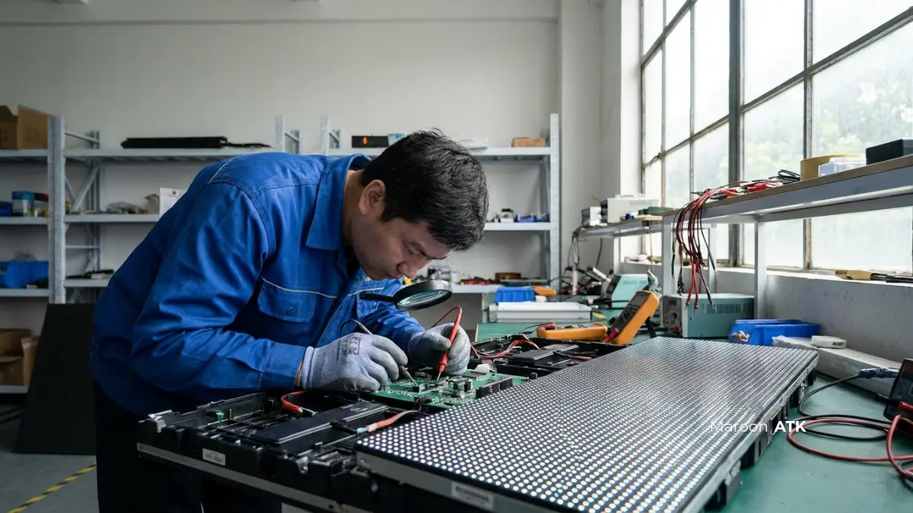

Paket perawatan videotron Jakarta dari distributor resmi MAROON ATK mencakup pemeliharaan preventif berkala, penyediaan buffer spare part modul 3–5% satu batch produksi, garansi struktur bracket baja 2 tahun, perbaikan receiving card & power supply, serta training operasional mandiri bagi tim IT klien di lima kota besar: Jakarta, Surabaya, Malang, Denpasar, dan Makassar.
Jangan pertaruhkan citra lobi eksekutif, ruang boardroom direksi, atau auditorium instansi Anda pada vendor lepas yang sulit dihubungi pascainstalasi. Membeli layar LED videotron bukan sekadar transaksi jual-beli perangkat keras, melainkan investasi aset visual jangka panjang bernilai ratusan juta rupiah yang membutuhkan jaminan keamanan struktur dan dukungan after-sales yang jelas.
Kenapa Layanan After-Sales Videotron Penting untuk Investasi Jangka Panjang?
Layanan after-sales videotron sangat vital karena layar LED tersusun atas ribuan modul elektronik mikro (SMD) yang menyala terus-menerus. Tanpa dukungan pemeliharaan rutin dari distributor resmi, klien rentan menghadapi berbagai masalah teknis:
- Titik piksel mati (Dead Pixel): Sebagian titik diode LED padam atau macet pada satu warna tertentu, merusak estetika presentasi visual korporat.
- Belang warna (Color Mismatch): Perbedaan saturasi dan kecerahan (brightness) akibat penggantian modul dari batch pabrik yang berbeda di masa mendatang.
- Kerusakan Power Supply & Kartu Penerima: Beban fluktuasi voltase listrik yang memicu matinya satu blok kabinet videotron secara mendadak.
- Kegagalan Struktur Bracket Baja: Risiko baut melonggar atau defleksi rangka akibat beban gempa ringan dan getaran gedung komersial.

Salah satu nilai tambah utama layanan after-sales MAROON ATK adalah alokasi buffer spare part modul sebesar 3% hingga 5% yang dicadangkan langsung dari batch produksi yang sama persis saat pemasangan awal. Jika di kemudian hari ada satu modul yang mengalami penurunan performa, tim teknisi dapat menggantinya seketika dengan modul cadangan tanpa meninggalkan jejak belang warna sama sekali.
Apa Risiko Jika Videotron Tidak Mendapat Perawatan dari Distributor Resmi?
Risiko terbesar menggunakan vendor tidak resmi adalah lenyapnya layanan pendukung setelah pembayaran termin akhir lunas. Saat layar mengalami kerusakan 6 bulan kemudian, vendor pihak ketiga kerap sulit dihubungi, atau suku cadang yang dicari sudah diskontinu di pasaran.
Selain aspek modul, ketiadaan audit inspeksi berkala pada struktur rangka baja (bracket) berisiko fatal terhadap keselamatan publik, terutama pada videotron berdimensi raksasa di dinding lobi utama atau videotron outdoor yang terpapar terpaan angin (wind load) ekstrem. Memilih distributor resmi berbadan hukum PT dengan garansi komprehensif adalah langkah mitigasi risiko investasi paling bijak.
Bagaimana Layanan Paket Perawatan Videotron di Jakarta?
Di wilayah DKI Jakarta, layanan after-sales MAROON ATK mencakup pelaksanaan survei teknis daya dukung beban dinding (load-bearing test) dan kesiapan instalasi kelistrikan 3-phase sebelum proyek disepakati. Tim teknisi kami terbiasa menyesuaikan jadwal inspeksi dan perawatan dengan regulasi ketat gedung perkantoran Grade A/B di SCBD, Mega Kuningan, Sudirman, dan TB Simatupang yang mewajibkan pekerjaan pemeliharaan dilakukan pada jam lembur malam hari atau akhir pekan.
Bagi pengelola gedung dan kantor di Jakarta yang ingin menjadwalkan inspeksi atau survei teknis awal, silakan hubungi tim spesialis videotron Jakarta via WhatsApp.
Bagaimana Layanan Paket Perawatan Videotron di Surabaya?
Untuk klien korporat, kawasan industri, dan kantor perbankan di Surabaya, paket perawatan mencakup standar after-sales yang setara dengan Jakarta: buffer modul cadangan satu batch, garansi komprehensif 2 tahun, serta kesiapan tim tanggap darurat lokal untuk mengatasi kendala siaran mendadak. Anda dapat berkonsultasi mengenai layanan videotron Surabaya di sini.
Bagaimana Layanan Paket Perawatan Videotron di Malang?
Kebutuhan videotron di Malang banyak berasal dari auditorium universitas, aula serbaguna kampus, dan dinas pemerintah daerah. Paket perawatan di Malang difokuskan pada training intensif staf teknisi laboratorium IT internal kampus agar mahir mengoperasikan software video processor dan melakukan penanganan mandiri dengan alat vakum servis magnetik khusus. Silakan hubungi kami via WhatsApp untuk wilayah Malang.
Bagaimana Layanan Paket Perawatan Videotron di Denpasar?
Kondisi atmosfer pesisir di Denpasar (Bali) menuntut proteksi ekstra terhadap korosi dan oksidasi akibat uap garam. Paket perawatan di Denpasar mencakup pelapisan conformal coating anti-lembab pada modul sirkuit PCB dan pengecekan ketahanan power supply agar perangkat videotron di hotel, convention center, dan kantor cabang perbankan tetap beroperasi optimal tanpa gangguan. Silakan konsultasikan kebutuhan videotron Denpasar via WhatsApp.
Bagaimana Layanan Paket Perawatan Videotron di Makassar?
Sebagai hub sentral kawasan timur Indonesia, Makassar membutuhkan manajemen stok suku cadang yang terukur. MAROON ATK menjamin kesiapan buffer receiving card dan kabel data optical fiber cadangan langsung di lokasi klien, sehingga waktu henti operasional (downtime) dapat ditekan hingga mendekati nol saat terjadi gangguan perangkat. Silakan hubungi kami untuk konsultasi videotron Makassar.
Komparasi Layanan Perawatan: Distributor Resmi vs Vendor Lepas
| Cakupan Layanan | Distributor Resmi MAROON ATK | Vendor Lepas Pihak Ketiga |
|---|---|---|
| Buffer Spare Part Modul | Pasti 3–5% satu batch pabrik (warna dijamin 100% identik) | Tidak ada cadangan batch, risiko belang warna tinggi |
| Garansi Rangka & Bracket | Garansi kekuatan konstruksi baja 2 tahun terjamin | Hanya garansi unit layar tanpa perlindungan struktur |
| Commissioning & BAST | Uji fungsi 24 jam nonstop lengkap dengan berita acara resmi | Pemasangan singkat tanpa protokol uji kelayakan beban |
| Training Mandiri Staf IT | Lengkap dengan buku manual operasional & alat servis vakum | Tidak disediakan pelatihan resmi bagi tim internal |
| Legalitas & Dokumen Perpajakan | Berbadan hukum PT resmi, terbit e-Faktur PPN 11% valid | Kerap tanpa dokumen legal, menyulitkan proses audit B2B |
Bagaimana Cara Memesan Paket Perawatan Videotron dari MAROON ATK?
Pemesanan paket perawatan videotron dimulai dengan penjadwalan survei teknis awal secara gratis. Teknisi kami akan memeriksa kondisi eksisting layar, mengukur arus kelistrikan, dan memeriksa kestabilan struktur mounting sebelum menyusun rekomendasi pemeliharaan yang tepat.
Sebagai mitra distributor videotron Jakarta terpercaya, MAROON ATK selalu memastikan setiap penawaran mencantumkan detail spesifikasi teknis komponen secara terbuka dan didukung badan usaha resmi Pengusaha Kena Pajak (PKP).
Kebutuhan videotron di ruang auditorium atau ballroom sering kali membutuhkan sinkronisasi dengan penataan furniture kantor custom seperti meja rapat eksekutif dan kursi auditorium ergonomis, serta kelengkapan operasional harian alat tulis kantor. Seluruh pengadaan ini dapat Anda konsolidasikan dalam satu pintu penagihan bersama MAROON ATK untuk mempermudah kontrol administrasi instansi Anda.
Kisaran biaya paket perawatan bervariasi bergantung pada dimensi layar, pixel pitch (P1.2, P1.5, P2.0, P2.5, P3.0), dan lokasi instalasi. Jadwalkan survei teknis gratis via WhatsApp sekarang untuk mendapatkan penawaran resmi dari tim kami.
Pertanyaan yang Sering Diajukan
Paket perawatan after-sales videotron umumnya mencakup garansi layar, power supply, receiving card, garansi struktur mounting, ketersediaan spare part, serta training operasional untuk staf IT internal klien.
Buffer spare part penting karena modul pengganti yang berasal dari batch produksi yang sama memastikan tidak ada perbedaan kalibrasi warna saat modul videotron perlu diganti di masa depan.
Survei teknis awal untuk menghitung daya dukung dinding dan kelistrikan dapat dijadwalkan secara gratis melalui WhatsApp sebelum klien mengeluarkan anggaran.

Asher Angelica
Praktisi pengadaan fasilitas kantor dan konsultan teknologi multimedia visual dengan pengalaman lebih dari 8 tahun dalam standarisasi videotron LED, smart board interaktif, dan integrasi fasilitas korporat modern di Indonesia.